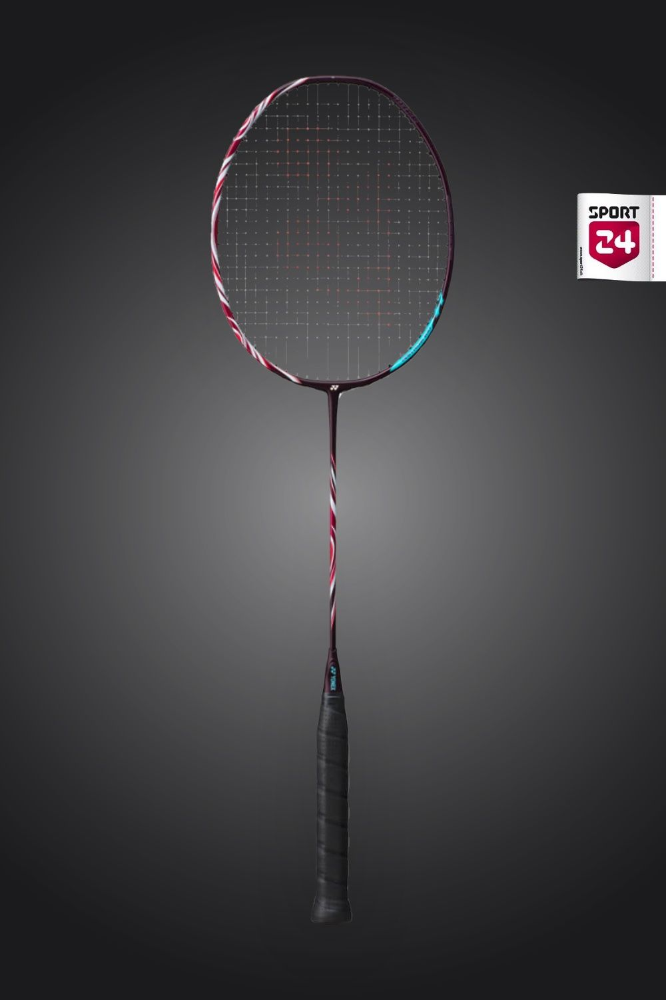

Yonex
Yonex Astrox 100 ZZ
฿7,500
Yonex Astrox 100 ZZ เป็นไม้แบดมินตันระดับพรีเมียมที่ออกแบบมาเพื่อผู้เล่นสายบุกที่ต้องการพลังและความแม่นยำสูงสุด ด้วยเทคโนโลยี Rotational Generator System ที่ช่วยเพิ่มแรงตบและการควบคุมไม้ ทำให้คุณสามารถเล่นได้อย่างมั่นใจในทุกจังหวะ
The "Gold Standard." Extra stiff, hyper-slim shaft. Known for pinpoint precision and explosive power. (Used by Viktor Axelsen).
- น้ำหนัก: 3U / 4U
- ฟีล: หัวหนัก ลูกตบแรง
- ราคา: 4,000 – 9,000 บาท
- ความคุ้มค่า: ⭐⭐⭐⭐☆
- เหมาะกับ: คนแรงดี / เล่นเดี่ยว / ตบหนัก